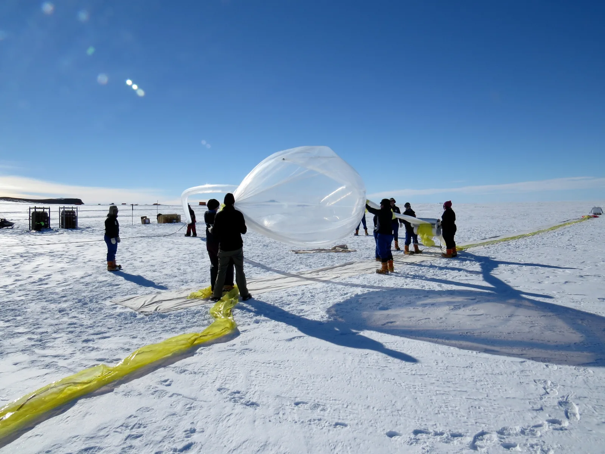

Changes of state of a gas and Boyle's law
Why does a sealed bag of crisps swell up tight on an aeroplane, even though nothing has been added to it?
Prior knowledge
- Pressure is force per unit area, $p = F/A$, and atmospheric pressure is about 101 kPachapter Pressure and hydrostatic pressure
- When the volume and the amount of gas stay the same, the pressure of a dilute gas is proportional to the temperature in kelvins, and the extension of the line meets absolute zerochapter Thermodynamic system, state variables and temperature
- Gases expand much more than liquids and solids when heated; for air $\gamma = 3.4 \cdot 10^{-3}\,\tfrac{1}{\text{K}}$ at constant pressurechapter Thermal expansion
Core path: follow the steps in order. Besides calculations, the core path includes investigations, explanations and graphs. Tasks marked Optional give extra practice. Optional tasks: 5.
Think about it
At the departure gate the bag of crisps is loose, and you can press its sides in. At cruising altitude the same bag is plump and hard as a drum. The bag has not been opened, so no air has been added, and the cabin is not warmer than the departure gate. After landing the bag is loose again.
What factor affecting the air in the bag changes during the flight, and can the change in the volume of the air in the bag be calculated beforehand?
Optional Recap: pressure and force
Predict
Make your predictions before investigating 3 questions
Prediction 1: the gas is compressed to half
Prediction 2: a free plunger and heating
Optional Prediction 3: what kind of graph?
Investigate
Simulation
How to use
Choose a change of state, change the volume or the temperature, and follow the pressure gauge, the particle collisions and the graph. The colour of the gas shows the temperature (blue is cold, orange is warm; the colour scale is next to the thermometer). The flashes are particle collisions with the walls: the more often and the harder they hit, the greater the pressure. The faint line in the graph is the theory, the dashed line extends the straight line to the origin, the blue points are the saved measurements and the red point is the current state. Speed changes only the pace of the motion of the particles, not the pressure, the volume or the temperature.
Assumptions of the model
In an isobaric change a weight keeps the pressure constant, and in an isochoric change the plunger is locked. The speed of the particles is proportional to $\sqrt{T}$ when $T$ is in kelvins.
How the calculation works
The pressure in the simulation is calculated from the equation $pV/T = \text{constant}$, so the numbers are values of the model, not measurements from a real syringe.
The cylinder in the simulation contains a fixed amount of ideal gas: no gas escapes and none is added.
Experiment 1: only the volume changes
Test predictions 1 and 3. The change of state is isothermal, so the temperature stays at $20\,{}^\circ\text{C}$. Change only the volume and record a measurement at least at the volumes 50 ml, 25 ml and 100 ml. The table shows the volume in millilitres, like the slider, but the pressure in pascals (100 kPa = 100 000 Pa) and the product $pV$ in joules ($1\,\text{kPa} \cdot 1\,\text{ml} = 0.001\,\text{J}$).
Initial state: change of state: isothermal, $\theta$ = 20 °C, volume $V$ = $50\,\text{ml}$. Kept constant: change of state, $\theta$. Varied: volume $V$.
| volume $V$ | $p$ $(\text{Pa})$ | $pV$ $(\text{J})$ |
|---|
More to investigate 3 tasks
Experiment 2: only the temperature changes, the pressure stays the same
Test prediction 2. The piston is free to move, and the weight on top of it keeps the pressure at 100 kPa, so the change of state is isobaric. Change only the temperature and record a measurement at least at temperatures $20\,{}^\circ\text{C}$ and $80\,{}^\circ\text{C}$, preferably also $150\,{}^\circ\text{C}$ and $-50\,{}^\circ\text{C}$. In the $(T, V)$ graph, see where a line drawn through the points would hit if it were extended. The table shows the Celsius temperature $\theta$ you set, the kelvin temperature $T$, the volume of the air in millilitres and the ratio $V/T$ in ml/K.
Initial state: change of state: isobaric, $\theta$ = 20 °C. Kept constant: change of state. Varied: $\theta$.
| $\theta$ | $T$ $(\text{K})$ | $V$ $(\text{ml})$ | $V/T$ $(\text{ml/K})$ |
|---|
Syringe experiment: one measurement deviates
Simulated example data · invented example values resembling a real syringe experiment
Students sealed air in a syringe, connected the syringe to a pressure gauge and pressed the plunger in steps. The table shows example values that resemble their measurements, not the results of a real experiment. For one measurement the plunger was pressed quickly and the pressure was read immediately.
| $V$ (ml) | $p$ (kPa) |
|---|---|
| 60 | 84.0 |
| 50 | 101 |
| 40 | 126 |
| 30 | 181 |
| 20 | 252 |
Calculate a new column $pV$ (or $1/V$) in the table and compare the rows.
Conclusion: Boyle's law in the simulation and in the syringe
Based on the table of experiment 1 and the syringe data, write: how did the pressure depend on the volume when the temperature stayed the same? Did the product $pV$ stay constant? Also calculate $1/V$ for your rows: what kind of $(1/V, p)$ graph would they give? Why do the readings of the simulation follow the law exactly but the syringe data does not?
Model answer
When the volume halved from $50\,\text{ml}$ to $25\,\text{ml}$, the pressure doubled from $100\,\text{kPa}$ to $200\,\text{kPa}$, and at $100\,\text{ml}$ it was $50\,\text{kPa}$. The product $pV$ stayed at $5.0\,\text{J}$: the pressure is inversely proportional to the volume, and the $(V, p)$ points lie on a hyperbola. From the column $1/V$ ($0.020$, $0.040$ and $0.010\,\text{ml}^{-1}$) we see that the $(1/V, p)$ points lie on a straight line through the origin whose slope is $pV$. The simulation calculates the pressure from the model $pV/T = \text{constant}$, so its readings follow the law exactly and do not prove it. In the syringe data (made-up values that resemble a measurement) the product $pV$ varies slightly because of measurement inaccuracy, and in the quickly compressed measurement the air warmed up, so its pressure was greater than the law predicts. An experimental result must always be checked against the scatter of the measurements and the errors of the experimental set-up.
Assess your own answer
Tick the points your own answer already contains.
Theory
Key idea
The state of a fixed amount of gas is described by its pressure $p$, volume $V$ and temperature $T$. When one of them changes, at least one of the others usually changes too. This kind of change is called a change of state. It is easiest to study changes of state by keeping one of the quantities constant. In an isothermal change the temperature is constant, in an isobaric change the pressure, and in an isochoric change the volume.
According to the micro model, the pressure of a gas comes from particles colliding with the walls of the container. If the gas is compressed to half of its original volume and the temperature stays the same, the particles move as fast as before, but they hit the walls twice as often. The pressure doubles.
So in an isothermal change the pressure is inversely proportional to the volume, and the product of pressure and volume stays constant. This is called Boyle's law. It answers the opening question: the air pressure in the aeroplane cabin drops to about 78 kPa, so the air in the bag expands until the bag is tight. In a tight bag the pressure of the air stays slightly higher than the cabin pressure, and that is why the bag feels hard.
Boyle's law works well for air and other gases at ordinary pressures and temperatures. The amount of gas must stay the same, so no gas may leak out or come in. The pressure used is the total pressure of the gas, not the gauge pressure shown by a meter.
Boyle's law can be verified experimentally. Air is sealed in a syringe, and the syringe is connected to a pressure gauge. The plunger is pressed in steps, and the pressure is read at each volume. The measurement is done slowly so that the temperature of the air has time to return to room temperature. When the results are plotted in a $(V, p)$ coordinate system, the points lie on a falling curve, and it is hard to see from it whether the relationship is exactly inverse proportionality. So a new column $1/V$ is calculated in the table, and $p$ is plotted as a function of $1/V$. If the law holds, within the measurement uncertainty the points lie on a straight line through the origin, and the slope of the line is the constant $pV$. Try it in the simulation: save measurements at different volumes and choose “Plot p as a function of 1/V”.
When a gas is heated, its particles move faster. If the piston can move so that the pressure stays constant (an isobaric change), the gas expands. When the amount of gas stays the same and the gas is dilute, its volume is directly proportional to the temperature in kelvins. If the volume is instead kept constant (an isochoric change), the pressure rises, and it is directly proportional to the temperature in kelvins. In both cases the temperature must be given in kelvins, because the proportionality starts from absolute zero.

Boyle's law and changes of state of a gas
In an isothermal change, that is, according to Boyle's law,
$$p_1 V_1 = p_2 V_2$$
where $p_1$ and $V_1$ are the pressure (Pa) and volume (m³) of the gas in the initial state and $p_2$ and $V_2$ in the final state. The equation is the same as $pV = \text{constant}$. Dividing it by $V$ gives
$$p = \text{constant} \cdot \frac{1}{V}$$
So the pressure is inversely proportional to the volume. If we write $x = 1/V$ and $y = p$, the equation has the form $y = kx$, like the equation of a straight line in FY1. So the $(1/V, p)$ graph is a straight line through the origin, and its slope is $k = pV$.
The unit of the product $pV$ is $\text{Pa} \cdot \text{m}^3 = \text{N/m}^2 \cdot \text{m}^3 = \text{N} \cdot \text{m} = \text{J}$, and $1\,\text{kPa} \cdot 1\,\textsf{l} = 1\,\text{J}$. Because both sides of the equation $p_1 V_1 = p_2 V_2$ have the same units, pressure and volume can also be given in, for example, kilopascals and litres, as long as they are the same on both sides.
In an isobaric and in an isochoric change
$$\frac{V_1}{T_1} = \frac{V_2}{T_2} \qquad \text{and} \qquad \frac{p_1}{T_1} = \frac{p_2}{T_2}$$
where $T_1$ and $T_2$ are the temperatures of the gas in kelvins (K) in the initial and final state. So the volume or the pressure of a closed, dilute gas is directly proportional to the temperature in kelvins, and the extension of the straight line in a $(T, V)$ or $(T, p)$ graph passes through the origin, that is, through absolute zero, $0\,\text{K}$. The extension is a prediction of the model: a real gas condenses into a liquid before $0\,\text{K}$ is reached.
The temperature in kelvins is obtained from the Celsius temperature $\theta$ by adding 273.15:
$$T = \theta + 273.15\,\text{K}$$
where $\theta$ is the temperature in degrees Celsius as a number; in calculations $273\,\text{K}$ is enough.
Common misconception
Three mistakes are often repeated:
- Inverse proportionality is not a falling straight line. When the volume doubles, the pressure halves, so the $(V, p)$ graph is a curve that approaches the axes but never meets them. A straight line is obtained only when $p$ is plotted as a function of $1/V$.
- Celsius degrees do not work in a ratio of temperatures. When $1.00\,\textsf{l}$ of air is heated at constant pressure from $10\,{}^\circ\text{C}$ to $20\,{}^\circ\text{C}$, its volume does not double. Calculated in kelvins, $V_2 = V_1 T_2 / T_1 = 1.00\,\textsf{l} \cdot 293\,\text{K} / 283\,\text{K} \approx 1.04\,\textsf{l}$, so the volume increases by only about $3.5\,\%$.
- The pressure of a gas in a closed container does not come from the weight of the gas. In a small container the weight of the gas is negligible, and the pressure comes from the collisions of the particles, so it is equal everywhere in the container.
Summary
- In a change of state, the pressure, volume and temperature of a gas change. In an isothermal change $T$ is constant, in an isobaric change $p$, and in an isochoric change $V$.
- Boyle's law: in an isothermal change $p_1 V_1 = p_2 V_2$, so the pressure is inversely proportional to the volume.
- Inverse proportionality is verified by calculating a column $1/V$ in the table and plotting $p$ as a function of $1/V$: the points must lie on a straight line through the origin, within the measurement uncertainty.
- When the amount of gas stays the same, the volume of a dilute gas at constant pressure, and the pressure at constant volume, is directly proportional to the temperature in kelvins. In these calculations the temperatures are always given in kelvins.
Optional Return to your predictions
Compare your predictions with the experimental results and with Boyle's law $p_1V_1 = p_2V_2$. Then return to the opening question: what changes during the flight, and why does the air in a sealed bag expand? Use Boyle's law to estimate how much the volume of the air in the bag can increase when the cabin pressure drops from 101 kPa to 78 kPa.
Would you change your prediction?
Examples
Once you have studied the chapter's theory, move on to the guided examples. In the first you follow a worked solution step by step; in the next ones you make the choices yourself, and the hints help if you get stuck.
Example 1: A crisp packet on a plane
At the airport, a bag of crisps contains $0.80\,\textsf{l}$ of air at a pressure of 101 kPa. During the flight the cabin pressure is 78 kPa. What is the volume of the air in the bag during the flight, if the temperature stays the same and the bag can expand freely?
Step 1/7
Given and find. We know $p_1 = 101\,\text{kPa}$, $V_1 = 0.80\,\textsf{l}$ and $p_2 = 78\,\text{kPa}$. The temperature is the same. We want the final volume $V_2$ in litres.
Step 2/7
Principle. The bag is sealed, so the amount of air does not change, and the temperature stays the same. So the change is isothermal and Boyle's law holds: the product $pV$ stays constant. The bag expands freely, so the pressure inside it is always the same as in the cabin.
Step 3/7
Rearranged formula. Solve $V_2$ from Boyle's law by dividing both sides by the pressure $p_2$:
$$\begin{aligned} p_1 V_1 &= p_2 V_2 \\ V_2 &= \frac{p_1 V_1}{p_2} \end{aligned}$$
Step 4/7
Unit conversions. No units need to be converted. Both pressures are in kilopascals, so they cancel in the quotient, and the volume comes out directly in litres.
Step 5/7
Substitution. Substitute the values with their units:
$$\begin{aligned} V_2 &= \frac{p_1 V_1}{p_2} \\ &= \frac{101\,\text{kPa} \cdot 0.80\,\textsf{l}}{78\,\text{kPa}} \\ &= 1.036\,\textsf{l} \end{aligned}$$
Step 6/7
Result. The volume of the air is $V_2 \approx 1.0\,\textsf{l}$, to two significant figures like the initial data $0.80\,\textsf{l}$ and $78\,\text{kPa}$. The volume increases by about $30\,\%$. If the bag is already almost full, it swells tight.
Step 7/7
Reasonableness. The pressure decreases, so the volume must increase. The factor of increase is the pressure ratio $101/78 \approx 1.3$, and $0.80\,\textsf{l} \cdot 1.3 \approx 1.0\,\textsf{l}$. At the end the product $pV$ is
the same as at the start, $101\,\text{kPa} \cdot 0.80\,\textsf{l} = 80.8\,\text{kPa}\cdot\textsf{l}$.
Optional Example 2: Find the error
Optional Example 3: Apply to a new situation
A hiker drinks a 1.50-litre plastic bottle empty at a mountain hut and closes the cap. At the hut the air pressure is 72.0 kPa. In the valley the air pressure is 101 kPa, and the bottle has collapsed. Assume that the temperature of the air in the bottle is the same in both places, that the air in the bottle is an ideal gas, and that the soft bottle collapses so that the pressure inside is the same as outside.
What is the volume of the air in the bottle in the valley? Answer in litres.
Hint 1: a guiding question
What stays the same when the bottle goes from the hut to the valley, and what changes? What kind of change of state is it?
Hint 2: what is the connection
The temperature and the amount of air stay the same, so Boyle's law holds: $p_1V_1 = p_2V_2$, so $V_2 = \dfrac{p_1V_1}{p_2}$.
Hint 3: an intermediate step
Substitute:
The kilopascals cancel, and the result comes out in litres.
Show the solution
Given
$V_1 = 1.50\,\textsf{l}$ at the hut, $p_1 = 72.0\,\text{kPa}$, in the valley $p_2 = 101\,\text{kPa}$, temperature the same, bottle closed
Find
the volume $V_2$ of the air in the bottle in the valley, in litres
Principle
The cap is on, so the amount of air does not change, and the temperature is the same in both places. Boyle's law holds: $pV$ is constant. The soft bottle collapses until the pressure inside is the same as outside, so the pressure of the bottle is always the outside air pressure.
Formula
$p_1V_1 = p_2V_2$, so
$$V_2 = \frac{p_1V_1}{p_2}$$
Conversions
No units need to be converted: both pressures are in kilopascals and cancel, so the volume comes out in litres.
Substitution
Answer
$1.07\,\textsf{l}$
Three significant figures. All three initial values ($72.0\,\text{kPa}$, $1.50\,\textsf{l}$ and $101\,\text{kPa}$) have three figures.
Reasonableness
The pressure increases by a factor of $101/72.0 \approx 1.4$, so the volume must decrease by the same factor: $1.50\,\textsf{l} / 1.4 \approx 1.07\,\textsf{l}$. In the valley the air in the bottle takes up about $71\,\%$ of the original volume, and the bottle is crumpled. The product $pV$ is $108\,\text{kPa}\cdot\textsf{l}$ in both places.
Review the chapter's concepts
Cards you mark Review later collect in your review deck.
- Boyle's law
- At constant temperature the pressure of a gas rises as its volume decreases.$$p_1 V_1 = p_2 V_2$$
Exercises
Level 1 · basic practice 8 exercises
One formula or one step of reasoning. Core exercises first, the rest is extra practice.
- Exercise 11-1Core
A disposable syringe contains $30.0\,\text{ml}$ of air at a pressure of $101\,\text{kPa}$. The tip of the syringe is closed with a finger, and the plunger is pulled out slowly until the volume of the air is $45.0\,\text{ml}$. The temperature of the air stays the same, and no air enters or leaves the syringe.
What is the air pressure in the syringe now?
Answer
$p_2 \approx 67.3\,\text{kPa}$
Show the solution
Given
$V_1 = 30.0\,\text{ml}$, $p_1 = 101\,\text{kPa}$, $V_2 = 45.0\,\text{ml}$, temperature constant, no air enters or leaves the syringe
Find
the air pressure $p_2$ in kilopascals
Principle
The temperature and the amount of air stay the same, so this is an isothermal change and Boyle's law holds: the pressure is inversely proportional to the volume, that is, the product $pV$ stays constant.
Formula
$p_1 V_1 = p_2 V_2$, so $p_2 = \dfrac{p_1 V_1}{V_2}$
Conversions
No units need to be converted: both volumes are in millilitres, so $\text{ml}$ cancels, and the pressure comes out in the same unit as $p_1$.
Substitution
$p_2$$= \dfrac{101\,\text{kPa} \cdot 30.0\,\text{ml}}{45.0\,\text{ml}}$$= 67.333\,\text{kPa}$Answer
$p_2 \approx 67.3\,\text{kPa}$
Three significant figures. All three initial values ($101\,\text{kPa}$, $30.0\,\text{ml}$ and $45.0\,\text{ml}$) have three figures, so nothing limits the result to fewer than three.
Reasonableness
The volume becomes 1.5 times larger, so the pressure must decrease by the same factor: $101\,\text{kPa} / 1.5 \approx 67\,\text{kPa}$. The pressure is below atmospheric pressure, so the outside air pushes the plunger inwards, which you can feel when pulling the plunger. The product $pV$ before and after is $3030\,\text{kPa}\cdot\text{ml}$ in both cases.
- Exercise 11-2
The pressure tank of a summer cottage's water system has a sealed air space at the top. When the tank has little water, the volume of the air is $24.0\,\textsf{l}$ and the total pressure is $160.0\,\text{kPa}$. The pump pumps more water into the tank, so the air is compressed and its total pressure rises to $280.0\,\text{kPa}$. The temperature of the air stays the same.
What is the volume of the air now?
Answer
$V_2 \approx 13.7\,\textsf{l}$
Show the solution
Given
$V_1 = 24.0\,\textsf{l}$, $p_1 = 160.0\,\text{kPa}$, $p_2 = 280.0\,\text{kPa}$ (total pressures), temperature constant, the air in the tank is sealed
Find
the air volume $V_2$ in litres
Principle
The air at the top of the tank is sealed and its temperature stays the same, so the volume and pressure of the air follow Boyle's law. The rising water compresses the air and raises its pressure.
Formula
$p_1 V_1 = p_2 V_2$, so $V_2 = \dfrac{p_1 V_1}{p_2}$
Conversions
No units need to be converted: the kilopascals cancel in the quotient, and the volume comes out directly in litres.
Substitution
$V_2$$= \dfrac{160.0\,\text{kPa} \cdot 24.0\,\textsf{l}}{280.0\,\text{kPa}}$$= 13.714\,\textsf{l}$Answer
$V_2 \approx 13.7\,\textsf{l}$
Three significant figures. The limiting value is the volume $24.0\,\textsf{l}$ (three figures); the pressures $160.0\,\text{kPa}$ and $280.0\,\text{kPa}$ are given with four figures, so they do not limit the result.
Reasonableness
The pressure increases, so the volume must decrease. The pressure ratio is $280/160 = 1.75$, and $24.0\,\textsf{l} / 1.75 \approx 13.7\,\textsf{l}$. The product $pV$ is $3840\,\text{kPa}\cdot\textsf{l}$ at the start and at the end. The compressed air acts like a spring that pushes water to the taps even when the pump is not running.
- Exercise 11-3
The graph shows example data: the pressure $p$ of the air in a disposable syringe as a function of the volume $V$, when the tip of the syringe is closed and the plunger is moved slowly, so the temperature of the air stays the same.
What is the air pressure when its volume is $25\,\text{ml}$? Read the values you need from the graph.
Answer
$p_2 = 80\,\text{kPa}$
Show the solution
Given
the measured point of the graph at a grid crossing, $V_1 = 20\,\text{ml}$, $p_1 = 100\,\text{kPa}$; $V_2 = 25\,\text{ml}$; the temperature and the amount of air stay the same
Find
the air pressure $p_2$ in kilopascals
Principle
The amount of air and the temperature stay the same, so the air follows Boyle's law: the product $pV$ is constant. So the pressure is not read from a line segment drawn between the points, because the $(V, p)$ graph is a curve and not a straight line.
Reading the graph
Choose a point that lies exactly at a grid crossing: $(20\,\text{ml}$; $100\,\text{kPa})$. The point $(40\,\text{ml}$; $50\,\text{kPa})$ also gives the same product $pV = 2000\,\text{kPa}\cdot\text{ml}$, which supports that the temperature stayed the same.
Formula
$p_1 V_1 = p_2 V_2$, so $p_2 = \dfrac{p_1 V_1}{V_2}$
Conversions
Not needed: the millilitres cancel in the quotient, and the pressure comes out in kilopascals.
Substitution
$p_2$$= \dfrac{100\,\text{kPa} \cdot 20\,\text{ml}}{25\,\text{ml}}$$= 80\,\text{kPa}$Answer
$p_2 = 80\,\text{kPa}$
Two significant figures like the volume $25\,\text{ml}$ and the volume $20\,\text{ml}$ read from the graph.
Reasonableness
The volume $25\,\text{ml}$ lies between the measured $20\,\text{ml}$ and $30\,\text{ml}$, so the pressure must lie between their pressures $100\,\text{kPa}$ and $67\,\text{kPa}$, and $80\,\text{kPa}$ does. A value read from a line segment drawn between the points would be about $83\,\text{kPa}$, which is too large, because the curve runs below the segment.
- Exercise 11-4
A balloon at a birthday party contains $3.0\,\textsf{l}$ of air in a living room at $22\,{}^\circ\text{C}$. The balloon is taken to the balcony in a frost of $-18\,{}^\circ\text{C}$, where its air cools to the temperature of the outside air. The air pressure in the balloon stays the same.
What is the volume of the air in the balloon on the balcony?
Answer
$V_2 \approx 2.6\,\textsf{l}$
Show the solution
Given
$V_1 = 3.0\,\textsf{l}$, $\theta_1 = 22\,{}^\circ\text{C}$, $\theta_2 = -18\,{}^\circ\text{C}$, pressure constant
Find
the air volume $V_2$ in litres
Principle
The pressure and the amount of air stay the same, so the change is isobaric and the volume is directly proportional to the temperature in kelvins: $V/T$ stays constant. The proportionality holds only for the absolute temperature.
Formula
$\dfrac{V_1}{T_1} = \dfrac{V_2}{T_2}$, so $V_2 = \dfrac{V_1 T_2}{T_1}$
Conversions
The temperatures in kelvins:
$T_1$$= (22 + 273.15)\,\text{K}$$= 295.15\,\text{K}$$T_2$$= (-18 + 273.15)\,\text{K}$$= 255.15\,\text{K}$Substitution
$V_2$$= \dfrac{3.0\,\textsf{l} \cdot 255.15\,\text{K}}{295.15\,\text{K}}$$= 2.5934\,\textsf{l}$Answer
$V_2 \approx 2.6\,\textsf{l}$
Two significant figures. The limiting value is the volume $3.0\,\textsf{l}$; the temperatures in kelvins, $295\,\text{K}$ and $255\,\text{K}$ (from whole degrees), have three figures and do not limit the result.
Reasonableness
The temperature drops by $40\,\text{K}$, which is about $14\,\%$ of the original $295\,\text{K}$, so the volume decreases by about $14\,\%$, and $3.0\,\textsf{l} \cdot 0.86 \approx 2.6\,\textsf{l}$. The balloon shrinks, which shows as wrinkled rubber. Calculated in degrees Celsius,
$V_2$$= 3.0\,\textsf{l} \cdot \dfrac{-18}{22}$would be negative, which is impossible. So the temperatures must be used in kelvins.
- Exercise 11-5
The lid of a chest freezer is opened, and the air space of the freezer fills with room air at $22\,{}^\circ\text{C}$. The lid is closed tight, so the air pressure in the freezer is $101\,\text{kPa}$. The air cools to $-18\,{}^\circ\text{C}$, and its volume stays the same.
What is the air pressure in the freezer now? (This is why the lid is hard to open again right after closing it.)
Answer
$p_2 \approx 87.3\,\text{kPa}$
Show the solution
Given
$p_1 = 101\,\text{kPa}$, $\theta_1 = 22\,{}^\circ\text{C}$, $\theta_2 = -18\,{}^\circ\text{C}$, volume constant
Find
the air pressure $p_2$ in kilopascals
Principle
The lid is tight and the volume of the freezer does not change, so the amount of air and the volume stay the same. The change is isochoric, and the pressure is directly proportional to the temperature in kelvins: $p/T$ stays constant.
Formula
$\dfrac{p_1}{T_1} = \dfrac{p_2}{T_2}$, so $p_2 = \dfrac{p_1 T_2}{T_1}$
Conversions
The temperatures in kelvins:
$T_1$$= (22 + 273.15)\,\text{K}$$= 295.15\,\text{K}$$T_2$$= (-18 + 273.15)\,\text{K}$$= 255.15\,\text{K}$Substitution
$p_2$$= \dfrac{101\,\text{kPa} \cdot 255.15\,\text{K}}{295.15\,\text{K}}$$= 87.312\,\text{kPa}$Answer
$p_2 \approx 87.3\,\text{kPa}$
Three significant figures. The pressure $101\,\text{kPa}$ and the temperatures in kelvins, $295\,\text{K}$ and $255\,\text{K}$ (from whole degrees $22\,{}^\circ\text{C}$ and $-18\,{}^\circ\text{C}$), all have three figures.
Reasonableness
The absolute temperature decreases by about $14\,\%$, so the pressure decreases by the same amount: $101\,\text{kPa} \cdot 0.86 \approx 87\,\text{kPa}$. The pressure drops by about $14\,\text{kPa}$, so the outside air pushes on the lid harder than the inside air. A completely tight lid of half a square metre would experience an extra force of about $14\,\text{kPa} \cdot 0.5\,\text{m}^2 \approx 7\,\text{kN}$. In practice air leaks past the seals, and the lid opens again after a moment.
- Exercise 11-6
A sealed amount of air is in a disposable syringe, and the plunger is moved slowly so that the temperature of the air stays the same.
What does the graph look like in which the air pressure $p$ is plotted as a function of the volume $V$?
Answer
A falling curve, because the product $pV$ is constant and the pressure decreases as the volume increases.
Show the solution
Find
what the $(V, p)$ graph of an isothermal change looks like.
Principle
The amount of sealed air stays the same and its temperature stays the same, so Boyle's law holds: $pV$ is constant. Then $p = \text{constant} \cdot \dfrac{1}{V}$, that is, the pressure is inversely proportional to the volume.
Model answer
The graph is a falling curve, because the product $pV$ is constant: when the volume doubles, the pressure halves, and when the volume halves, the pressure doubles. The curve approaches the axes but never meets them. A falling straight line would be wrong, because the pressure would not decrease by the same amount for every added millilitre. A rising graph is wrong, because the amount of air is the same all the time, and when the volume increases the particles hit the walls less often. A horizontal graph is wrong, because a constant temperature does not mean a constant pressure: when the volume changes, the pressure changes.
Reading the graph
The shape of the graph is deduced from the product $pV = \text{constant}$: choose the volumes $V$, $2V$ and $4V$, and the corresponding pressures are $p$, $\dfrac{p}{2}$ and $\dfrac{p}{4}$. The points do not lie on one straight line but form a falling curve.
- Exercise 11-7
The cylinder of an air compressor contains $1.50\,\textsf{l}$ of air at a pressure of $101\,\text{kPa}$. The plunger slowly compresses the air into a smaller space until the pressure is $240\,\text{kPa}$. The temperature of the air stays the same, and no air escapes from the cylinder.
What is the volume of the air now?
Answer
$V_2 \approx 0.63\,\textsf{l}$
Show the solution
Given
$V_1 = 1.50\,\textsf{l}$, $p_1 = 101\,\text{kPa}$, $p_2 = 240\,\text{kPa}$, temperature constant, no air escapes
Find
the air volume $V_2$ in litres
Principle
The amount and the temperature of the air stay the same, so Boyle's law holds: the pressure is inversely proportional to the volume and the product $pV$ stays constant.
Formula
$p_1 V_1 = p_2 V_2$, so $V_2 = \dfrac{p_1 V_1}{p_2}$
Conversions
No units need to be converted: the kilopascals cancel in the quotient, and the volume comes out directly in litres.
Substitution
$V_2$$= \dfrac{101\,\text{kPa} \cdot 1.50\,\textsf{l}}{240\,\text{kPa}}$$= 0.6312\,\textsf{l}$Answer
$V_2 \approx 0.63\,\textsf{l}$
Two significant figures like the pressure $240\,\text{kPa}$.
Reasonableness
The pressure increases, so the volume must decrease. The pressure ratio is $240 : 101 \approx 2.4$, and $1.50\,\textsf{l} : 2.4 \approx 0.63\,\textsf{l}$. The product $pV$ is $101\,\text{kPa} \cdot 1.50\,\textsf{l} = 151.5\,\text{kPa}\cdot\textsf{l}$ at the start and $240\,\text{kPa} \cdot 0.6312\,\textsf{l} = 151.5\,\text{kPa}\cdot\textsf{l}$ at the end.
- Exercise 11-8Core
A student measures the pressure $p$ of a sealed amount of air at different volumes $V$ at a constant temperature and plots the points in a $(1/V,\,p)$ graph. Within the measurement uncertainty, the points lie on a straight line through the origin.
What does this show?
Answer
The pressure is inversely proportional to the volume, so the product $pV$ is constant.
Show the solution
Find
what a straight line through the origin in a $(1/V,\,p)$ graph shows.
Principle
A straight line through the origin has the form $p = k \cdot \dfrac{1}{V}$, and its slope is $k = pV$. If the points lie, within the measurement uncertainty, on such a line, the product $pV$ is constant.
Model answer
The line shows that the pressure is inversely proportional to the volume and that the product $pV$ is constant, that is, Boyle's law holds within the measurement uncertainty. The claim of direct proportionality to the volume is wrong, because when the volume increases the quantity $1/V$ decreases. The claim of a rising temperature is wrong, because the points were plotted in a $(1/V,\,p)$ graph and not in a $(V,\,p)$ graph; a rising temperature would take the points off the line. The claim about the square is wrong, because then the points would lie on a curve and not on a line.
Level 2 · applied practice 8 exercises
Two steps, working with measured data, a unit conversion or rearranging a formula. Core exercises first, the rest is extra practice.
- Exercise 11-9
The cylinder of a firefighter's breathing apparatus has a volume of $6.8\,\textsf{l}$, and in a fully filled cylinder the air pressure is $300.0\,\text{bar}$ ($1\,\text{bar}$ = $100\,\text{kPa}$).
How many cubic metres would this air take up if it were released to an atmospheric pressure of $101\,\text{kPa}$? The temperature stays the same. Assume that Boyle's law holds even at such a high pressure.
Answer
$V_2 \approx 2.0\,\text{m}^3$
Show the solution
Given
$V_1 = 6.8\,\textsf{l}$, $p_1 = 300.0\,\text{bar}$, $p_2 = 101\,\text{kPa}$, $1\,\text{bar} = 100\,\text{kPa}$, temperature constant
Find
the air volume $V_2$ at outside air pressure in cubic metres
Principle
The amount of air and the temperature stay the same when the air is released, so Boyle's law holds (the exercise tells us to assume it holds even at high pressure). The air expands until its pressure is the same as the atmospheric pressure.
Formula
$p_1 V_1 = p_2 V_2$, so $V_2 = \dfrac{p_1 V_1}{p_2}$
Conversions
Pressures to the same unit:
$p_1$$= 300.0\,\text{bar}$$= 300.0 \cdot 100\,\text{kPa}$$= 30\,000\,\text{kPa}$(the factor $100\,\text{kPa/bar}$ is a definition and does not limit). The result comes out in litres, and $1\,\text{m}^3 = 1000\,\textsf{l}$.
Substitution
$V_2$$= \dfrac{30\,000\,\text{kPa} \cdot 6.8\,\textsf{l}}{101\,\text{kPa}}$$= 2019.8\,\textsf{l}$$= 2.0198\,\text{m}^3$Answer
$V_2 \approx 2.0\,\text{m}^3$
Two significant figures. The limiting value is the volume $6.8\,\textsf{l}$ (two figures); the pressure $300.0\,\text{bar}$ has four figures and $101\,\text{kPa}$ has three, so neither limits the result.
Reasonableness
The pressure is about 300 times the atmospheric pressure, so the volume is about $300 \cdot 6.8\,\textsf{l} \approx 2000\,\textsf{l}$. If a firefighter breathes $50\,\textsf{l}$ per minute, the air lasts about $40\,\text{min}$, which matches real equipment. At such a high pressure air no longer follows Boyle's law exactly: the product $pV$ is about $10\,\%$ larger than the law predicts, so the real volume is about $1.8\,\text{m}^3$.
- Exercise 11-10
An empty glass bottle is closed with a cork at $20\,{}^\circ\text{C}$, so the air pressure in the bottle is $101\,\text{kPa}$. The bottle is forgotten on the sauna bench. The cork pops out when the air pressure in the bottle is $125\,\text{kPa}$. The volume of the bottle stays the same.
At what temperature does the cork pop out? Give the answer in degrees Celsius.
Answer
$\theta_2 \approx 90\,{}^\circ\text{C}$
Show the solution
Given
$\theta_1 = 20\,{}^\circ\text{C}$, $p_1 = 101\,\text{kPa}$, $p_2 = 125\,\text{kPa}$, volume constant
Find
the temperature $\theta_2$ in degrees Celsius when the cork pops out
Principle
The bottle is sealed and its volume stays the same, so the amount of air and the volume are constant. The change is isochoric, and the pressure is directly proportional to the temperature in kelvins: $p/T$ stays constant.
Formula
$\dfrac{p_1}{T_1} = \dfrac{p_2}{T_2}$, so $T_2 = \dfrac{T_1 p_2}{p_1}$ and $\theta_2 = T_2 - 273.15\,\text{K}$ in degrees Celsius
Conversions
$T_1$$= (20 + 273.15)\,\text{K}$$= 293.15\,\text{K}$At the end the kelvins are converted back to degrees Celsius by subtracting $273.15$. The pressures do not need to be converted because they are in the same unit.
Substitution
$T_2$$= \dfrac{293.15\,\text{K} \cdot 125\,\text{kPa}}{101\,\text{kPa}}$$= 362.81\,\text{K}$so
$\theta_2$$= (362.81 - 273.15)\,{}^\circ\text{C}$$= 89.66\,{}^\circ\text{C}$Answer
$\theta_2 \approx 90\,{}^\circ\text{C}$
In whole degrees Celsius. The temperature in kelvins, $T_2 = 362.8\,\text{K} \approx 363\,\text{K}$, has three figures, because the pressures $101\,\text{kPa}$ and $125\,\text{kPa}$ and $T_1 = 293\,\text{K}$ (from the whole degree $20\,{}^\circ\text{C}$) have three figures. When $273.15\,\text{K}$ is subtracted, the precision of the temperature is in units, so the result is given in whole degrees: $90\,{}^\circ\text{C}$.
Reasonableness
The pressure increases by a factor of $125/101 \approx 1.24$, so the temperature in kelvins must increase by $24\,\%$: $293\,\text{K} \cdot 1.24 \approx 363\,\text{K}$. The sauna benches are often at 80–$90\,{}^\circ\text{C}$, so the cork can really pop out. If the calculation were done in degrees Celsius, the result would be
$20\,{}^\circ\text{C} \cdot \dfrac{125}{101}$$\approx 25\,{}^\circ\text{C}$and the cork would pop out already in a room. That is not true.
- Exercise 11-11Core
In a physics lesson the tip of a disposable syringe was connected to a pressure gauge, and the plunger of the syringe was moved slowly so that the temperature of the air stayed the same.
The measured volumes $V$ (ml) were 10.0; 12.5; 15.0; 20.0; 25.0 and 30.0, and the corresponding pressures $p$ (kPa) were 203; 159; 134; 99; 81 and 66.
Calculate a column $1/V$ in the table, plot $p$ as a function of $1/V$ and fit a straight line through the origin to the points. The slope of the line is $pV$. Give it in joules.
Answer
$pV \approx 2.0\,\text{J}$
Show the solution
Given
the measurements in the table $V = 10.0$; $12.5$; $15.0$; $20.0$; $25.0$; $30.0\,\text{ml}$ and $p = 203$; $159$; $134$; $99$; $81$; $66\,\text{kPa}$, temperature constant
Find
the slope $pV$ of the straight line fitted to the $(1/V,\,p)$ graph, in joules
Principle
The temperature and the amount of air stay the same, so by Boyle's law $pV$ is constant. Then $p = pV \cdot \dfrac{1}{V}$ is a proportionality, and the $(1/V,\,p)$ graph is a straight line through the origin whose slope is $pV$.
Reading the graph
Calculate the column $1/V$ (see Conversions) and plot the points $(1/V,\,p)$. The slope of a line through the origin is $p/(1/V) = pV$, so each point gives its own value: $pV = 2030$; $1988$; $2010$; $1980$; $2025$; $1980\,\text{kPa}\cdot\text{ml}$. The line is placed so that the points are spread evenly on both sides of it, and its slope is approximately the mean of these values,
$\dfrac{12\,013}{6}\,\text{kPa}\cdot\text{ml}$$\approx 2000\,\text{kPa}\cdot\text{ml}$Check from the graph: the line passes through the point $(0.100\,\tfrac{1}{\text{ml}}$; $200\,\text{kPa})$, and the measured point $(0.100$; $203)$ is slightly above it. The slope is read from the line and not from a single measured point, because every measurement has an error.
Formula
$k$$= \dfrac{\Delta p}{\Delta(1/V)}$$= \dfrac{p}{1/V}$$= pV$so $pV = \dfrac{p}{1/V}$
Conversions
$1/V = 0.100$; $0.0800$; $0.0667$; $0.0500$; $0.0400$; $0.0333\,\tfrac{1}{\text{ml}}$. Unit:
$1\,\text{kPa} \cdot 1\,\text{ml}$$= 1000\,\text{Pa} \cdot 10^{-6}\,\text{m}^3$$= 0.001\,\text{J}$Substitution
A point read from the line:
$pV$$= \dfrac{200\,\text{kPa}}{0.100\,\tfrac{1}{\text{ml}}}$$= 2000\,\text{kPa}\cdot\text{ml}$$= 2000 \cdot 0.001\,\text{J}$$= 2.00\,\text{J}$Answer
$pV \approx 2.0\,\text{J}$
Two significant figures. The limiting values are the pressures $99\,\text{kPa}$, $81\,\text{kPa}$ and $66\,\text{kPa}$ in the table, which are given with two figures; the volumes are given with three figures, and the three-figure pressures $203$, $159$ and $134\,\text{kPa}$ do not limit the result.
Reasonableness
The values of the product $pV$ are $1980$–$2030\,\text{kPa}\cdot\text{ml}$, so they differ from the mean by less than $2\,\%$. So the slope of the line is almost the same as $pV$ for every point, and Boyle's law holds within the accuracy of the measurements. If the law did not hold, the points would not lie on a straight line.
- Exercise 11-12
The envelope of a hot-air balloon has a volume of $2800\,\text{m}^3$, and there is an opening at the bottom of the envelope. The envelope is full of air at $10\,{}^\circ\text{C}$, which is heated with a burner to $100\,{}^\circ\text{C}$. The pressure inside the envelope stays equal to the outside air pressure.
All the air that was originally in the envelope warms to $100\,{}^\circ\text{C}$.
How many cubic metres of this $100\,{}^\circ\text{C}$ air do not fit in the envelope but have been pushed out through the opening?
Answer
$\Delta V \approx 890\,\text{m}^3$
Show the solution
Given
$V_1 = 2800\,\text{m}^3$, $\theta_1 = 10\,{}^\circ\text{C}$, $\theta_2 = 100\,{}^\circ\text{C}$, pressure constant
Find
the volume $V_2$ of the original air at $100\,{}^\circ\text{C}$ and the volume $\Delta V$ pushed out of the envelope, in cubic metres
Principle
The bottom of the envelope is open, so the pressure stays equal to the outside air pressure. When the same amount of air is heated at constant pressure, the volume is directly proportional to the temperature in kelvins. The volume of the envelope is constant, $V_1$, so the extra air is pushed out through the opening.
Formula
$\dfrac{V_1}{T_1} = \dfrac{V_2}{T_2}$, so $V_2 = \dfrac{V_1 T_2}{T_1}$ and the volume pushed out is $\Delta V = V_2 - V_1$
Conversions
The temperatures in kelvins:
$T_1$$= (10 + 273.15)\,\text{K}$$= 283.15\,\text{K}$$T_2$$= (100 + 273.15)\,\text{K}$$= 373.15\,\text{K}$Substitution
$V_2$$= \dfrac{2800\,\text{m}^3 \cdot 373.15\,\text{K}}{283.15\,\text{K}}$$= 3690.0\,\text{m}^3$so
$\Delta V$$= 3690.0\,\text{m}^3 - 2800\,\text{m}^3$$= 890.0\,\text{m}^3$Answer
$\Delta V \approx 890\,\text{m}^3$
Two significant figures. The limiting value is the temperature difference $\Delta T = 100\,{}^\circ\text{C} - 10\,{}^\circ\text{C} = 90\,\text{K}$, which as a difference of whole degrees has two figures; the volume $2800\,\text{m}^3$ has at least two figures and does not limit the result. When $\Delta V = V_1 (T_2 - T_1)/T_1$ is calculated directly from the difference, the temperature $T_1 = 283\,\text{K}$ has three figures and the result is $890\,\text{m}^3$.
Reasonableness
The temperature in kelvins increases by a factor of $373/283 \approx 1.32$, so the volume increases by about $32\,\%$: $2800\,\text{m}^3 \cdot 0.32 \approx 890\,\text{m}^3$. About a quarter of the warm air ($890/3690 \approx 24\,\%$) does not fit in the envelope. So less air is left in the envelope than when it was cold, and the balloon becomes lighter. A ten-fold volume calculated in degrees Celsius would be absurd.
- Exercise 11-13Core
Two sealed amounts of air are heated in a water bath. In vessel A the pressure $p$ of the air is measured and in vessel B the volume $V$ of the air. The air in both is at the temperature $\theta$ of the water bath (table, example data).
a) For every row of vessel A calculate the ratios $p/\theta$ and $p/T$, and for every row of vessel B the ratio $V/T$, where $T$ is the temperature in kelvins. Using your calculations, deduce which vessel shows an isochoric and which an isobaric change of state, and justify why the temperature must be in kelvins.
b) Predict the pressure of vessel A when the water bath boils and its temperature is $100\,{}^\circ\text{C}$.
Write the result of part b) in the answer box.
Air pressure in vessel A and volume in vessel B (example data) $\theta\,({}^\circ\text{C})$ $p_\text{A}\,(\text{kPa})$ $V_\text{B}\,(\text{ml})$ 20.0 99.8 14.7 40.0 106.4 15.7 60.0 113.4 16.6 80.0 119.8 17.6 Answer
$p \approx 127\,\text{kPa}$
Show the solution
Given
from the table the temperatures $\theta = 20.0$; $40.0$; $60.0$; $80.0\,{}^\circ\text{C}$, the pressures of vessel A $p_\text{A} = 99.8$; $106.4$; $113.4$; $119.8\,\text{kPa}$ and the volumes of vessel B $V_\text{B} = 14.7$; $15.7$; $16.6$; $17.6\,\text{ml}$
Find
a) the changes of state and the comparison of the ratios; b) the pressure $p$ of vessel A at $100\,{}^\circ\text{C}$ in kilopascals
Principle
If the pressure of vessel A is directly proportional to the temperature in kelvins, $p/T$ is constant, and the change is isochoric (the volume and the amount of air stay the same). In vessel B the volume changes: if $V/T$ is constant, the pressure is constant and the change is isobaric. The proportionality holds only for the temperature in kelvins.
Reading the graph
The task does not require plotting: the points $(T,\,p)$ and $(T,\,V)$ would lie on straight lines through the origin if the ratios are constant, so the ratios are calculated directly from the rows of the table and compared. The temperatures in kelvins are $T = 293.15$; $313.15$; $333.15$; $353.15\,\text{K}$.
Model answer a)
In vessel A the ratio $p/T$ is $0.3404$; $0.3398$; $0.3404$; $0.3392\,\tfrac{\text{kPa}}{\text{K}}$, so it is constant to within about $0.3\,\%$. In vessel B the ratio $V/T$ is $0.0501$; $0.0501$; $0.0498$; $0.0498\,\tfrac{\text{ml}}{\text{K}}$, so it is also constant within the measurement uncertainty. So vessel A shows an isochoric change and vessel B an isobaric change. The small variation is due to the random variation of the measurements.
In degrees Celsius the ratio of vessel A is $p/\theta = 4.99$; $2.66$; $1.89$; $1.50\,\tfrac{\text{kPa}}{{}^\circ\text{C}}$. These decrease sharply, so the pressure is not proportional to the temperature in degrees Celsius but to the temperature in kelvins.Formula
$\dfrac{p}{T} = k$, so $p = kT$
Conversions
$T = \theta + 273.15\,\text{K}$, so
$T_{100}$$= (100 + 273.15)\,\text{K}$$= 373.15\,\text{K}$The coefficient $k$ is the mean of the four ratios of vessel A.
Substitution
The sum of the ratios is $1.3598\,\tfrac{\text{kPa}}{\text{K}}$, so $k = 0.33995\,\tfrac{\text{kPa}}{\text{K}}$.
$$\begin{aligned} p &= kT \\ &= 0.33995\,\tfrac{\text{kPa}}{\text{K}} \cdot 373.15\,\text{K} \\ &= 126.9\,\text{kPa} \end{aligned}$$
Answer
$p \approx 127\,\text{kPa}$
Three significant figures like the pressures in the table.
Reasonableness
The temperature in kelvins increases from $80\,{}^\circ\text{C}$ to $100\,{}^\circ\text{C}$ in the ratio $373.15 : 353.15 \approx 1.057$, and $119.8\,\text{kPa} \cdot 1.057 \approx 126.6\,\text{kPa}$. The same calculation from the initial state:
$99.8\,\text{kPa} \cdot \dfrac{373.15}{293.15}$$\approx 127.0\,\text{kPa}$The result is greater than the last measured value $119.8\,\text{kPa}$, as it should be when the temperature rises.
- Exercise 11-14
A student verifies Boyle's law. She connects a disposable syringe to a pressure gauge with a thin hose and moves the plunger slowly so that the temperature stays the same. She reads the volume $V$ of the air from the scale of the syringe and the pressure $p$ from the gauge (table, example data). The student calculates the product $pV$ for every row and notices that it is not constant, although the temperature stayed the same. However, the hose and the gauge also contain air, whose volume $V_\text{h}$ is the same in all the measurements and which the student did not take into account.
a) Calculate the product $pV$ for every row and explain why it increases with the volume. Is the error random or systematic? Justify your answer.
b) The total volume of the sealed air is $V + V_\text{h}$, and Boyle's law holds for it. Determine the volume $V_\text{h}$ of the air in the hose and the gauge using the first and the last row of the table.
Write the result of part b) in the answer box.
Air pressure as a function of the volume of the syringe (example data) $V\,(\text{ml})$ $p\,(\text{kPa})$ 10.0 200 20.0 109 30.0 75.0 40.0 57.1 Answer
$V_\text{h} \approx 2.0\,\text{ml}$
Show the solution
Given
from the table $V = 10.0$; $20.0$; $30.0$; $40.0\,\text{ml}$ and $p = 200$; $109$; $75.0$; $57.1\,\text{kPa}$, temperature constant; the volume $V_\text{h}$ of the air in the hose and the gauge is constant but unknown
Find
a) the behaviour of the product $pV$ and the type of error; b) the volume $V_\text{h}$ in millilitres
Principle
The sealed air in the syringe and the hose has a total volume $V + V_\text{h}$. The temperature and the amount of air stay the same, so Boyle's law holds for all the air: $p\,(V + V_\text{h})$ is constant. The student calculated the product using only the volume of the syringe.
Reading the graph
From the table the product $pV$ is calculated for every row, and for part b) the first row $(10.0\,\text{ml}$; $200\,\text{kPa})$ and the last row $(40.0\,\text{ml}$; $57.1\,\text{kPa})$ are chosen.
Model answer a)
The products are $pV = 2000$; $2180$; $2250$; $2284\,\text{kPa}\cdot\text{ml}$. They increase with the volume, because there is in reality always $V_\text{h}$ more air than is read from the scale. When $V$ is small, this extra volume is a large part of the total volume and the product $pV$ stays smaller than the true value. When $V$ is large, the share is smaller and the product is closer to the true value. The error is systematic: it is in the same direction in every measurement and the volume is the same, so it does not vary randomly. Repeating the measurements would not remove it; it is corrected by taking the volume of the hose into account.
Formula
$p_1 (V_1 + V_\text{h}) = p_4 (V_4 + V_\text{h})$, so
$V_\text{h}$$= \dfrac{p_4 V_4 - p_1 V_1}{p_1 - p_4}$Conversions
Not needed: the kilopascals and millilitres are the same on both sides of the equation, and the result comes out in millilitres.
Substitution
The products are
$p_4 V_4$$= 57.1\,\text{kPa} \cdot 40.0\,\text{ml}$$= 2284\,\text{kPa}\cdot\text{ml}$$p_1 V_1$$= 200\,\text{kPa} \cdot 10.0\,\text{ml}$$= 2000\,\text{kPa}\cdot\text{ml}$The pressure difference is $p_1 - p_4 = 142.9\,\text{kPa}$.
$$\begin{aligned} V_\text{h} &= \dfrac{284\,\text{kPa}\cdot\text{ml}}{142.9\,\text{kPa}} \\ &= 1.99\,\text{ml} \end{aligned}$$
Answer
$V_\text{h} \approx 2.0\,\text{ml}$
Two significant figures. The difference of the products $284\,\text{kPa}\cdot\text{ml}$ is small compared with the products, so the result is sensitive to the readings and cannot be given more precisely.
Reasonableness
The products $p\,(V + V_\text{h})$ with $V_\text{h} = 2.0\,\text{ml}$ are $200 \cdot 12.0 = 2400$; $109 \cdot 22.0 = 2398$; $75.0 \cdot 32.0 = 2400$ and $57.1 \cdot 42.0 = 2398\,\text{kPa}\cdot\text{ml}$. They are constant to within $0.1\,\%$, so the corrected Boyle's law fits all four rows. A hose volume of two millilitres is reasonable: a thin hose and the inside of the gauge fit in a small space.
- Exercise 11-15
To determine absolute zero, a tight rigid bottle containing air is heated in a water bath, and the air pressure $p$ is measured as a function of the temperature $\theta$ (table, example data). The volume of the bottle and the amount of air stay the same.
a) Plot the points in a $(\theta,\,p)$ graph, fit a straight line to them and extend the line (extrapolate) to the pressure $p = 0$. What temperature in degrees Celsius do you get for absolute zero?
b) Compare the result with the known value $-273.15\,{}^\circ\text{C}$ and explain why a real gas still does not reach this point, although the extension of the line passes through it.
Write the result of part a) in the answer box.
Air pressure in a rigid bottle (example data) $\theta\,({}^\circ\text{C})$ $p\,(\text{kPa})$ 0.0 100.1 20.0 107.3 40.0 114.9 60.0 121.8 80.0 129.1 Answer
$\theta_0 \approx -276\,{}^\circ\text{C}$
Show the solution
Given
from the table $\theta = 0.0$; $20.0$; $40.0$; $60.0$; $80.0\,{}^\circ\text{C}$ and $p = 100.1$; $107.3$; $114.9$; $121.8$; $129.1\,\text{kPa}$, volume and amount of air constant
Find
a) the absolute zero $\theta_0$ in degrees Celsius from the extension of the line; b) the comparison with the known value and the behaviour of the gas
Principle
The volume and the amount of air are constant, so the pressure is directly proportional to the temperature in kelvins, $p = kT$. So a line fitted to the $(\theta,\,p)$ points reaches the pressure $p = 0$ at the temperature $T = 0\,\text{K}$, which is absolute zero.
Reading the graph
A line is fitted to the points so that the points lie evenly on both sides of it. Two points far apart are read from the line. The fitted line passes less than $0.04\,\text{kPa}$ from the measured points $(0.0\,{}^\circ\text{C}$; $100.1\,\text{kPa})$ and $(80.0\,{}^\circ\text{C}$; $129.1\,\text{kPa})$, so they are suitable as points of the line. The extension of the line to the left of the graph meets the $\theta$ axis where $p = 0$.
Model answer b)
The result differs from the known value $-273.15\,{}^\circ\text{C}$ by about $3\,\text{K}$, that is, about $1\,\%$, which is within the measurement uncertainty when the points are less than $0.3\,\text{kPa}$ from the line. The extrapolation reaches about $276\,\text{K}$ below the measured range, although the measurement interval is only $80\,\text{K}$, so even a small error in the slope changes the result a lot. The extension is a prediction of the model: a real gas condenses into a liquid at a much higher temperature, and then the pressure is no longer proportional to the temperature in kelvins and the extension of the line does not hold.
Formula
The slope of the line
$k$$= \dfrac{p_2 - p_1}{\theta_2 - \theta_1}$and the line $p = p_1 + k(\theta - \theta_1)$. From the condition $p = 0$ we get $\theta_0 = \theta_1 - \dfrac{p_1}{k}$.
Conversions
Not needed: a temperature difference is the same in degrees Celsius and in kelvins, and the result is wanted in degrees Celsius.
Substitution
The slope
$$\begin{aligned} k &= \dfrac{129.1\,\text{kPa} - 100.1\,\text{kPa}}{80.0\,{}^\circ\text{C} - 0.0\,{}^\circ\text{C}} \\ &= 0.3625\,\tfrac{\text{kPa}}{\text{K}} \end{aligned}$$
and the absolute zero
$$\begin{aligned} \theta_0 &= 0.0\,{}^\circ\text{C} - \dfrac{100.1\,\text{kPa}}{0.3625\,\tfrac{\text{kPa}}{\text{K}}} \\ &= -276.1\,{}^\circ\text{C} \end{aligned}$$
Answer
$\theta_0 \approx -276\,{}^\circ\text{C}$
Three significant figures like the pressures. Reading from a graph and extrapolating are estimates, so $\pm 3\,\%$ is accepted.
Reasonableness
When $\theta = -276\,{}^\circ\text{C}$, the pressure is
$100.1\,\text{kPa} + 0.3625\,\tfrac{\text{kPa}}{\text{K}} \cdot (-276.1\,\text{K})$$\approx 0\,\text{kPa}$The result is close to the known value $-273.15\,{}^\circ\text{C}$. If the result were, for example, $-100\,{}^\circ\text{C}$ or $-500\,{}^\circ\text{C}$, the slope would have been read wrongly.
- Exercise 11-16
A disposable syringe contains $40\,\text{ml}$ of air at a pressure of $100\,\text{kPa}$. The tip of the syringe is closed, and the plunger is pushed slowly until the volume of the air is $10\,\text{ml}$. The temperature of the air stays the same throughout.
Which graph shows the pressure $p$ of the air as a function of the volume $V$ during the compression?
Answer
Graph B
Show the solution
Find
which of the four graphs shows the pressure $p$ of the air in the syringe as a function of the volume $V$, when $40\,\text{ml}$ of air at the pressure $100\,\text{kPa}$ is compressed slowly to the volume $10\,\text{ml}$ at the same temperature.
Principle
The tip of the syringe is closed, so the amount of air does not change, and the temperature stays the same. The change of state is therefore isothermal, and Boyle's law holds: $pV$ is constant. The pressure is inversely proportional to the volume, so the $(V, p)$ graph is a falling curve, not a straight line.
Model answer
The correct one is graph B. From Boyle's law the pressure is solved at the volume $V_2$.
$p_1 V_1 = p_2 V_2$, so $p_2 = \dfrac{p_1 V_1}{V_2}$
$p_2 = \dfrac{100\,\text{kPa} \cdot 40\,\text{ml}}{20\,\text{ml}}$, that is, $p_2 = 200\,\text{kPa}$
$p_3 = \dfrac{100\,\text{kPa} \cdot 40\,\text{ml}}{10\,\text{ml}}$, that is, $p_3 = 400\,\text{kPa}$
Graph B passes through the points $(40\,\text{ml}$; $100\,\text{kPa})$, $(20\,\text{ml}$; $200\,\text{kPa})$ and $(10\,\text{ml}$; $400\,\text{kPa})$. Graph A is a falling straight line: its end points are right, but at the volume $20\,\text{ml}$ it gives $300\,\text{kPa}$, because on a straight line the pressure would grow by the same amount for every millilitre. In graph C the pressure stays the same, which confuses a constant temperature with a constant pressure. In graph D the pressure decreases on compression, as if the pressure were directly proportional to the volume.
Reading the graph
From each graph the pressure is read at three volumes: $40\,\text{ml}$, $20\,\text{ml}$ and $10\,\text{ml}$. Graphs A and B start and end at the same points, so they can be told apart only by the pressure at the volume $20\,\text{ml}$: in graph A it is $300\,\text{kPa}$ and in graph B $200\,\text{kPa}$.
Level 3 · challenging 5 exercises
Optional: application, two ideas together or a new situation where you reason for yourself.
- Exercise 11-17
A diver is in a lake at a depth of $20.0\,\text{m}$ and blows an air bubble whose volume is $2.0\,\text{cm}^3$. The bubble rises to the surface.
The atmospheric pressure is $101\,\text{kPa}$ and the density of water is $1000\,\text{kg/m}^3$. Assume that the temperature of the water is the same all the way and that the air of the bubble does not dissolve in water.
What is the volume of the bubble at the surface? Using the result, justify why a person diving with compressed air must not hold their breath when rising to the surface.
Answer
$V_2 \approx 5.9\,\text{cm}^3$
Show the solution
Given
$h = 20.0\,\text{m}$, $V_1 = 2.0\,\text{cm}^3$, $p_0 = 101\,\text{kPa}$, $\rho = 1000\,\tfrac{\text{kg}}{\text{m}^3}$, $g = 9.81\,\tfrac{\text{m}}{\text{s}^2}$, temperature constant, air does not dissolve in water
Find
the volume $V_2$ of the bubble at the surface in cubic centimetres
Principle
Deep down, the bubble is subject to the hydrostatic pressure of the water in addition to the atmospheric pressure. A rising bubble is in balance with the surrounding water, so its pressure is always the pressure of its surroundings. The temperature and the amount of air stay the same, so Boyle's law holds.
Formula
$p_1 = p_0 + \rho g h$ and $p_1 V_1 = p_0 V_2$, so
$V_2$$= \dfrac{p_1 V_1}{p_0}$$= \dfrac{(p_0 + \rho g h) V_1}{p_0}$Conversions
The hydrostatic pressure in pascals:
$\rho g h$$= 196\,200\,\text{Pa}$$= 196.2\,\text{kPa}$because $1\,\text{kPa} = 1000\,\text{Pa}$. The volumes are in the same unit, so they do not need to be converted.
Substitution
$p_1$$= 101\,\text{kPa} + 1000\,\tfrac{\text{kg}}{\text{m}^3} \cdot 9.81\,\tfrac{\text{m}}{\text{s}^2} \cdot 20.0\,\text{m}$$= 101\,\text{kPa} + 196.2\,\text{kPa}$$= 297.2\,\text{kPa}$$V_2$$= \dfrac{297.2\,\text{kPa} \cdot 2.0\,\text{cm}^3}{101\,\text{kPa}}$$= 5.885\,\text{cm}^3$Answer
$V_2 \approx 5.9\,\text{cm}^3$
Two significant figures. The limiting value is the volume of the bubble, $2.0\,\text{cm}^3$ (two figures); the depth $20.0\,\text{m}$ and the atmospheric pressure $101\,\text{kPa}$ have three figures, and the density of water, $1000\,\tfrac{\text{kg}}{\text{m}^3}$, is a known table value that does not limit the result.
Reasonableness
Every ten metres of water adds about one atmosphere of pressure, so at $20\,\text{m}$ the pressure is about $3 p_0$ and the volume at the surface is about three times as large: $3 \cdot 2.0\,\text{cm}^3 \approx 6\,\text{cm}^3$. The same applies to the lungs: if a person diving with compressed air held their breath while rising, the air in the lungs would try to expand to almost three times its volume. The lungs cannot stretch that much, and lung tissue can be damaged by far smaller expansion. You must never hold your breath when rising: breathe normally throughout the ascent, so that the expanding air can leave the lungs.
- Exercise 11-18
The tyres of a car are filled in a garage at $20\,{}^\circ\text{C}$, and the tyre pressure gauge shows $250.0\,\text{kPa}$. The gauge shows gauge pressure, that is, how much greater the air pressure in the tyre is than the atmospheric pressure. The atmospheric pressure is $101\,\text{kPa}$.
At night the car stands in the yard, and the air in the tyre cools to $-20\,{}^\circ\text{C}$. The volume of the tyre stays practically the same, and no air escapes.
What does the gauge show on a frosty morning? Justify why the reading of the gauge cannot be substituted directly into the formula $p_1/T_1 = p_2/T_2$.
Answer
$\Delta p_2 \approx 202\,\text{kPa}$
Show the solution
Given
gauge pressure $\Delta p_1 = 250.0\,\text{kPa}$, $p_0 = 101\,\text{kPa}$, $\theta_1 = 20\,{}^\circ\text{C}$, $\theta_2 = -20\,{}^\circ\text{C}$, volume constant, no air escapes
Find
the reading of the gauge, that is, the gauge pressure $\Delta p_2$ on a frosty morning, in kilopascals
Principle
The volume of the tyre and the amount of air stay the same, so the pressure is directly proportional to the temperature in kelvins. The proportionality applies to the total pressure, not to the gauge pressure of the meter: the gauge pressure is the total pressure minus the atmospheric pressure, and there is still air in the tyre even when the gauge shows zero.
Formula
$p = \Delta p + p_0$ and $\dfrac{p_1}{T_1} = \dfrac{p_2}{T_2}$, so $p_2 = \dfrac{p_1 T_2}{T_1}$ and $\Delta p_2 = p_2 - p_0$
Conversions
The total pressure
$p_1$$= 250.0\,\text{kPa} + 101\,\text{kPa}$$= 351\,\text{kPa}$(the precision of the sum is in units, because $101\,\text{kPa}$ is given to the precision of units). The temperatures in kelvins:
$T_1$$= (20 + 273.15)\,\text{K}$$= 293.15\,\text{K}$$T_2$$= (-20 + 273.15)\,\text{K}$$= 253.15\,\text{K}$Substitution
$p_2$$= \dfrac{351\,\text{kPa} \cdot 253.15\,\text{K}}{293.15\,\text{K}}$$= 303.11\,\text{kPa}$so
$\Delta p_2$$= 303.11\,\text{kPa} - 101\,\text{kPa}$$= 202.11\,\text{kPa}$Answer
$\Delta p_2 \approx 202\,\text{kPa}$
Three significant figures. The atmospheric pressure $101\,\text{kPa}$ is given to the precision of units, so both the total pressure $351\,\text{kPa}$ and $p_2 = 303\,\text{kPa}$ are known to the precision of units (three figures); also $T_1 = 293\,\text{K}$ and $T_2 = 253\,\text{K}$ have three figures. The difference $303 - 101$ keeps the units, so $202\,\text{kPa}$ has three figures.
Reasonableness
The total pressure decreases by about $14\,\%$ ($253/293 \approx 0.86$): $351\,\text{kPa} \cdot 0.86 \approx 303\,\text{kPa}$. If the reading were substituted directly into the formula, the result would be $250\,\text{kPa} \cdot 0.86 \approx 216\,\text{kPa}$, which is wrong, because the gauge pressure is not proportional to the temperature. The reading drops from $250\,\text{kPa}$ to $202\,\text{kPa}$, almost a fifth, so it is worth checking the tyres in frosty weather.
- Exercise 11-19
The cylinder of a bicycle pump is $40.0\,\text{cm}$ long and equally wide along its whole length. When the plunger is pulled up, the cylinder is full of outside air at a pressure of $101\,\text{kPa}$. The gauge pressure of the tyre is $300.0\,\text{kPa}$.
The valve of the pump lets air into the tyre only when the air pressure in the cylinder is equal to the air pressure in the tyre.
How far must the plunger be pressed before air starts to flow into the tyre? Assume that the temperature stays the same and the volume of the hose is negligible. Justify why pumping a hard tyre feels inefficient.
Answer
$s \approx 29.9\,\text{cm}$
Show the solution
Given
cylinder length $L_1 = 40.0\,\text{cm}$, initial pressure $p_1 = p_0 = 101\,\text{kPa}$, gauge pressure of the tyre $\Delta p = 300.0\,\text{kPa}$, cross-sectional area constant, temperature constant
Find
the distance $s$ the piston moves before the valve opens, in centimetres
Principle
The valve is closed, so the air in the cylinder is sealed and its temperature stays the same: Boyle's law holds. The valve opens only when the pressure in the cylinder equals the total pressure of the tyre, $p_0 + \Delta p$. The cross-sectional area of the cylinder is constant, so the volume is proportional to the length of the air column.
Formula
$p_2 = p_0 + \Delta p$ and $p_1 A L_1 = p_2 A L_2$, so $L_2 = \dfrac{p_1 L_1}{p_2}$ and the distance $s = L_1 - L_2$
Conversions
The total pressure of the tyre is obtained by adding the atmospheric pressure to the gauge pressure:
$p_2$$= 300.0\,\text{kPa} + 101\,\text{kPa}$$= 401\,\text{kPa}$No other conversions are needed, because $A$ and the kilopascals cancel and the lengths are in centimetres.
Substitution
$L_2$$= \dfrac{101\,\text{kPa} \cdot 40.0\,\text{cm}}{401\,\text{kPa}}$$= 10.075\,\text{cm}$so
$s$$= 40.0\,\text{cm} - 10.075\,\text{cm}$$= 29.925\,\text{cm}$Answer
$s \approx 29.9\,\text{cm}$
Three significant figures. In the difference $40.0\,\text{cm} - 10.1\,\text{cm}$ the decimals are determined by the length $40.0\,\text{cm}$ (tenths of a centimetre), so the result $29.9\,\text{cm}$ has three figures; the pressures $101\,\text{kPa}$ and $401\,\text{kPa}$ also have three figures.
Reasonableness
The pressure ratio is $401/101 \approx 4$, so the air column is compressed to about a quarter: $40.0\,\text{cm} / 4 \approx 10\,\text{cm}$. About three quarters of the stroke is used to compress the air, and only during the last $10\,\text{cm}$ does air flow into the tyre. The harder the tyre, the smaller the part of the stroke that fills it, and that is why pumping feels inefficient.
- Exercise 11-20
A student studies air sealed in a disposable syringe. At first there is $40.0\,\text{ml}$ of air at a pressure of $101\,\text{kPa}$ and a temperature of $20.0\,{}^\circ\text{C}$. She compresses the air in two ways. In slow compression the temperature stays the same. In fast compression the plunger is pushed down in a fraction of a second and the pressure is read as soon as the plunger has stopped: the air has had time to give only part of the energy to the surroundings (table, example data).
a) Calculate the product $pV$ for every row in both series. Deduce in which compression Boyle's law holds.
b) Explain why the pressure in fast compression is greater than Boyle's law predicts. What happens to the pressure when the plunger is held still and the air cools back to the temperature $20.0\,{}^\circ\text{C}$?
c) Think of the fast compression as two steps: first an isothermal compression to the volume $10.0\,\text{ml}$ and then the warming of the air at constant volume to the pressure in the table. Use this to calculate the temperature of the air in degrees Celsius right after the fast compression, when the volume is $10.0\,\text{ml}$.
Write the result of part c) in the answer box.
Air pressure in slow and fast compression (example data) $V\,(\text{ml})$ $p_\text{slow}\,(\text{kPa})$ $p_\text{fast}\,(\text{kPa})$ 40.0 101 101 30.0 135 141 20.0 203 226 10.0 403 481 Answer
$\theta_2 \approx 76\,{}^\circ\text{C}$
Show the solution
Given
initial state $V_1 = 40.0\,\text{ml}$, $p_1 = 101\,\text{kPa}$, $\theta_1 = 20.0\,{}^\circ\text{C}$; from the table the pressures in slow and fast compression at the volumes $40.0$; $30.0$; $20.0$ and $10.0\,\text{ml}$; final volume of the fast compression $V_2 = 10.0\,\text{ml}$ and pressure $p_2 = 481\,\text{kPa}$
Find
a) in which compression Boyle's law holds; b) why the pressure is greater in the fast compression and what happens as the air cools; c) the temperature $\theta_2$ of the air in degrees Celsius right after the fast compression
Principle
Boyle's law holds when the temperature of the sealed gas stays constant. In fast compression the plunger does work on the gas, but the energy does not have time to transfer completely to the surroundings, so part of the work stays in the gas and the internal energy and the temperature of the gas increase. The amount of air is the same, so the temperature is obtained from two changes of state: first an isothermal compression (Boyle's law) and then warming at constant volume ($p/T$ constant).
Reading the graph
From the row $V = 10.0\,\text{ml}$ of the table the pressure of the fast compression, $481\,\text{kPa}$, is read. The comparison pressure for the isothermal compression is calculated from the initial state, because it contains no reading error.
Model answer a)
In slow compression the products are $pV = 4040$; $4050$; $4060$ and $4030\,\text{kPa}\cdot\text{ml}$, so they are constant to within about $1\,\%$ and Boyle's law holds. In fast compression the products are $4040$; $4230$; $4520$ and $4810\,\text{kPa}\cdot\text{ml}$, and they increase by as much as about $19\,\%$ from the initial value, so Boyle's law does not hold.
Model answer b)
In fast compression the temperature of the gas rises, because part of the work stays as energy of the gas: the mean kinetic energy of the particles increases. The particles of warmer gas hit the walls more often and harder, so the pressure is greater than at a constant temperature. Boyle's law requires a constant temperature, so it does not describe this situation. When the plunger is held still, the volume is constant and the air gives energy to the surroundings until the temperature is again $20.0\,{}^\circ\text{C}$. The pressure then drops back to the value given by Boyle's law, that is, about $404\,\text{kPa}$.
Formula
Step 1 (isothermal): $p_1 V_1 = p' V_2$, so $p' = \dfrac{p_1 V_1}{V_2}$. Step 2 (isochoric): $\dfrac{p'}{T_1} = \dfrac{p_2}{T_2}$, so $T_2 = \dfrac{T_1 p_2}{p'}$ and $\theta_2 = T_2 - 273.15\,\text{K}$ in degrees Celsius.
Conversions
$T_1$$= (20.0 + 273.15)\,\text{K}$$= 293.15\,\text{K}$Finally the kelvins are converted back to degrees Celsius by subtracting $273.15$. The pressures and volumes do not need to be converted, because they cancel.
Substitution
The isothermal compression gives the pressure
$$\begin{aligned} p' &= \dfrac{101\,\text{kPa} \cdot 40.0\,\text{ml}}{10.0\,\text{ml}} \\ &= 404\,\text{kPa} \end{aligned}$$
and the warming at constant volume gives the temperature
$$\begin{aligned} T_2 &= \dfrac{293.15\,\text{K} \cdot 481\,\text{kPa}}{404\,\text{kPa}} \\ &= 349.0\,\text{K} \end{aligned}$$
so
$\theta_2$$= (349.0 - 273.15)\,{}^\circ\text{C}$$= 75.9\,{}^\circ\text{C}$Answer
$\theta_2 \approx 76\,{}^\circ\text{C}$
In whole degrees Celsius. The pressure $481\,\text{kPa}$ has three figures, and the initial temperature $20.0\,{}^\circ\text{C}$ limits the result to whole degrees.
Reasonableness
The temperature rises by about $56\,\text{K}$ when the compression is fast and the volume decreases to a quarter. A bicycle pump gets warm when pumping, so the order of magnitude is reasonable. Check: when the gas cools back to $293.15\,\text{K}$ at constant volume, the pressure is
$481\,\text{kPa} \cdot \dfrac{293.15}{349.0}$$\approx 404\,\text{kPa}$the same as the pressure given by Boyle's law. The ratio of the pressures $481 : 404 \approx 1.19$ is the same as the ratio of the temperatures in kelvins $349.0 : 293.15 \approx 1.19$.
- Exercise 11-21
A freediver fills her lungs at the surface and dives into a lake holding her breath. The volume $V$ of the air in the lungs was measured at different depths $h$ (table, example data). The atmospheric pressure is $101\,\text{kPa}$, the density of water is $1000\,\text{kg/m}^3$ and $g = 9.81\,\text{m/s}^2$. Assume that the temperature and the amount of the air stay the same and that the pressure of the air in the lungs is all the time the same as the pressure of the surrounding water.
a) Calculate the total pressure $p$ of the surroundings at each depth and the product $pV$. Using your calculations, deduce whether the air in the lungs obeys Boyle's law.
b) Assume as a model that the lungs cannot be compressed to less than $1.5\,\textsf{l}$. At what depth would the volume of the air in the lungs reach this limit?
c) What is the ratio of the pressure at the depth of part b) to the pressure at the surface, and what is the ratio of the volumes of the lungs at the surface and at this depth? Compare the ratios.
Write the result of part b) in the answer box.
Volume of air in a freediver's lungs (example data) $h\,(\text{m})$ $V\,(\textsf{l})$ 0.0 6.0 5.0 4.0 10.0 3.0 20.0 2.0 Answer
$h \approx 30\,\text{m}$
Show the solution
Given
from the table the depths $h = 0.0$; $5.0$; $10.0$; $20.0\,\text{m}$ and the volumes $V = 6.0$; $4.0$; $3.0$; $2.0\,\textsf{l}$; $p_0 = 101\,\text{kPa}$, $\rho = 1000\,\tfrac{\text{kg}}{\text{m}^3}$, $g = 9.81\,\tfrac{\text{m}}{\text{s}^2}$, limit $V_\text{limit} = 1.5\,\textsf{l}$; temperature and amount of air constant
Find
a) whether the air in the lungs obeys Boyle's law; b) the depth $h$ in metres at which $V = 1.5\,\textsf{l}$; c) the increase of pressure compared with the surface
Principle
At the depth $h$ the lungs are subject to the hydrostatic pressure of the water in addition to the atmospheric pressure, $p = p_0 + \rho g h$. The pressure in the lungs is the same as the pressure of the surroundings. The temperature and the amount of the air stay the same, so Boyle's law holds if the product $pV$ is constant.
Reading the graph
For each depth in the table the pressure is calculated with the formula $p = p_0 + \rho g h$ and multiplied by the volume. The mean of the products $pV$ gives the constant of Boyle's law, and it is used to calculate the pressure at which $V = 1.5\,\textsf{l}$.
Model answer a)
The pressures are $101$; $150$; $199$ and $297\,\text{kPa}$, and the products $pV = 606$; $600$; $597$ and $594\,\text{kPa}\cdot\textsf{l}$. The products decrease steadily, but differ from each other by less than $2\,\%$, which is within the measurement uncertainty, so the air in the lungs obeys Boyle's law.
Formula
$p = p_0 + \rho g h$ and $p V = \text{constant}$. At the limit
$p_\text{limit}$$= \dfrac{pV}{V_\text{limit}}$and the depth is
$h$$= \dfrac{p_\text{limit} - p_0}{\rho g}$Conversions
$\rho g$$= 1000\,\tfrac{\text{kg}}{\text{m}^3} \cdot 9.81\,\tfrac{\text{m}}{\text{s}^2}$$= 9810\,\tfrac{\text{Pa}}{\text{m}}$$= 9.81\,\tfrac{\text{kPa}}{\text{m}}$The products $pV$ are calculated in the unit $\text{kPa}\cdot\textsf{l}$, so $V_\text{limit}$ stays in litres and the result comes out in kilopascals.
Substitution
The sum of the products is $2397\,\text{kPa}\cdot\textsf{l}$, so $pV = 599.25\,\text{kPa}\cdot\textsf{l}$.
$$\begin{aligned} p_\text{limit} &= \dfrac{599.25\,\text{kPa}\cdot\textsf{l}}{1.5\,\textsf{l}} \\ &= 399.5\,\text{kPa} \end{aligned}$$
$$\begin{aligned} h &= \dfrac{399.5\,\text{kPa} - 101\,\text{kPa}}{9.81\,\tfrac{\text{kPa}}{\text{m}}} \\ &= 30.43\,\text{m} \end{aligned}$$
Answer
$h \approx 30\,\text{m}$
Two significant figures like the limit volume $1.5\,\textsf{l}$. If the product corresponding to the surface, $101\,\text{kPa} \cdot 6.0\,\textsf{l} = 606\,\text{kPa}\cdot\textsf{l}$, is used, the result is $31\,\text{m}$, which is of the same size.
Model answer c)
The ratio of the pressures is $399.5 : 101 \approx 4.0$, that is, the pressure is four times that at the surface. A water column of thirty metres adds about $3 \cdot 101\,\text{kPa}$ of pressure, and the atmospheric pressure is added on top of that. The ratio of the volumes is $6.0\,\textsf{l} : 1.5\,\textsf{l} = 4.0$, that is, the volume is a quarter. The ratios are inverse, as Boyle's law requires.
Reasonableness
The row $h = 20.0\,\text{m}$ of the table gives the pressure $297\,\text{kPa}$, that is, about three times the atmospheric pressure, and the volume $2.0\,\textsf{l}$, that is, a third. Every additional $10\,\text{m}$ adds about $98\,\text{kPa}$ of pressure, that is, about one atmospheric pressure, so at the depth $30\,\text{m}$ the pressure is about $4$ times and the volume a quarter, $6.0\,\textsf{l} : 4 = 1.5\,\textsf{l}$. The depth $30\,\text{m}$ is below the deepest row of the table, $20\,\text{m}$, so this is an extrapolation, whose reliability rests on the assumption of a constant temperature and a constant amount of air.
Self-assessment
Finally, assess whether you have reached the chapter's goals. If an answer is wrong, you get a suggestion of what to review.
Assess what you learned
These goal assessments are included when you submit the chapter's tasks.
1. Reflection task
Answer on your own first and only then open the answer.
- A syringe contains 40 ml of air at a pressure of 100 kPa. The plunger is pressed until the volume is 25 ml, and the temperature does not change. What is the pressure?
Answer
By Boyle's law
$p_2$$= p_1V_1/V_2$$= 100\,\text{kPa} \cdot 40\,\text{ml} / 25\,\text{ml}$$= 160\,\text{kPa}$
2. Concept task
3. Concept task: Kelvin temperature
4. Calculation task: Graph and calculation
The $(1/V, p)$ graph drawn from measurements of the air in a syringe is a straight line through the origin whose slope is 3.6 kPa·l.
What is the air pressure when its volume is 30.0 ml? The temperature stays the same. Answer in kilopascals.
Hint 1: a guiding question
What does the slope of the line tell you? Remember which quantities are on the axes.
Hint 2: what is the connection
On the line $p = k \cdot \dfrac{1}{V}$, so $p = \dfrac{k}{V}$, and the slope is $k = pV$.
Hint 3: an intermediate step
Convert the volume to litres, $30.0\,\text{ml} = 0.0300\,\textsf{l}$, and calculate
Show the solution
Given
the $(1/V,\,p)$ graph is a straight line through the origin, slope $k = 3.6\,\text{kPa}\cdot\textsf{l}$; volume $V = 30.0\,\text{ml}$, temperature constant
Find
the air pressure $p$ in kilopascals
Principle
The temperature and the amount of air stay the same, so Boyle's law holds and $pV$ is constant. So $p$ is proportional to $1/V$, and the slope of the graph is $k = pV$.
Reading the graph
The line passes through the origin, so at every point of the graph $\dfrac{p}{1/V} = k$. In this exercise no point needs to be read: the slope $k$ is given, and the pressure we want is the point of the line at $1/V = 1/(0.0300\,\textsf{l})$.
Formula
The equation of the line is $p = k \cdot \dfrac{1}{V}$, so
$$p = \frac{k}{V}$$
Conversions
The unit of the slope contains litres, so the volume is converted to litres: $30.0\,\text{ml} = 0.0300\,\textsf{l}$.
Substitution
Answer
$120\,\text{kPa}$
Two significant figures. The limiting value is the slope $3.6\,\text{kPa}\cdot\textsf{l}$ (two figures); the volume $30.0\,\text{ml}$ has three figures and does not limit the result.
Reasonableness
$1\,\text{kPa}\cdot\textsf{l} = 1\,\text{J}$, so $pV = 3.6\,\text{J}$. When the volume is about $0.03\,\textsf{l}$, that is, small, the pressure is large: $3.6/0.03 = 120$. The pressure is slightly above atmospheric pressure, $101\,\text{kPa}$, which fits a slightly compressed syringe. When the volume doubles, the pressure would halve, which is the result of Boyle's law.
Suggestion: one answer does not show everything you can do, but review the theory and do the core exercises.
5. Explanation task: Explain the experiment
Boyle's law is verified with a syringe and a pressure gauge. Explain why the plunger is moved slowly and why the results are plotted in a $(1/V, p)$ coordinate system and not only in a $(V, p)$ coordinate system.
What else must be ensured in the experimental set-up?
Model answer
Boyle's law $pV = \text{constant}$ holds only when the temperature stays the same. When the plunger is pressed quickly, the compression warms the air, and the pressure of warm air is greater than in an isothermal change. When it is moved slowly, the temperature of the air has time to return to room temperature. In addition, the syringe must be tight so that the amount of gas stays the same. In a $(V, p)$ coordinate system the points lie on a falling curve, and by eye you cannot tell inverse proportionality from other falling curves. When a column $1/V$ is calculated in the table and $p$ is plotted as a function of $1/V$, inverse proportionality shows as a straight line through the origin whose slope is $pV$. The line can be checked with a ruler.
Assess your own answer
Tick the points your own answer already contains.
Photographs
- Ballooning in the constant sun of the South Pole summer (BARREL). NASA/Goddard/BARREL/Nicky Knox. source, public domain